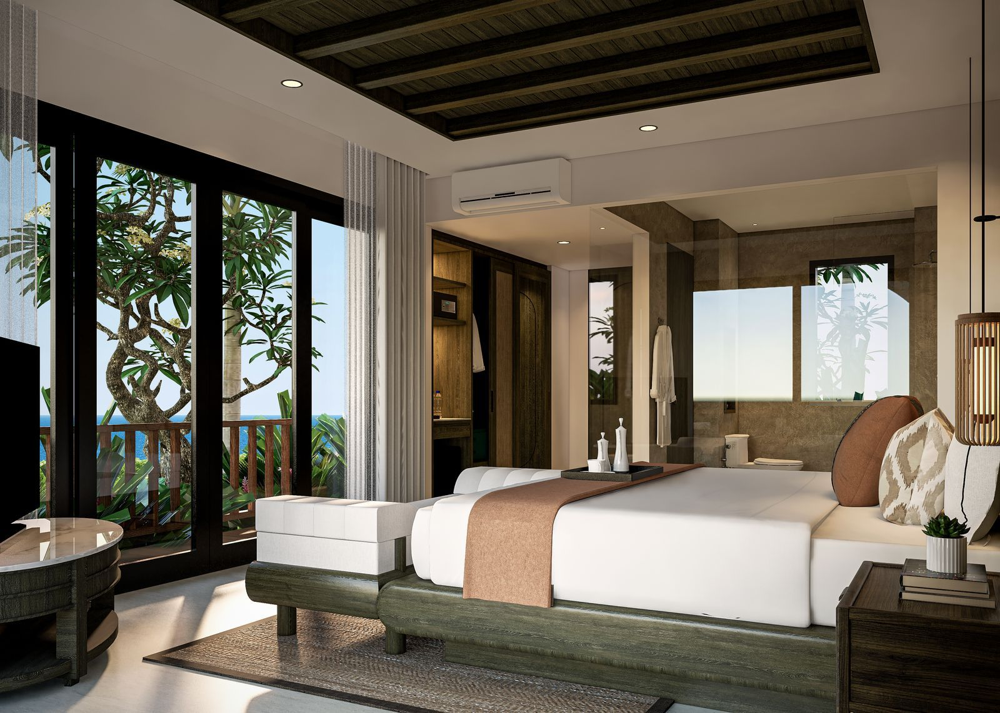

Wellness · On-site
Hilltop Yoga
Begin your day with yoga at the open-air pavilion, set against panoramic hill and ocean views, designed for peaceful reflection, balance, and renewal.
Read more
Yoga on the ridge, offerings in the lobby, cliffs and mantas a short drive down the hill.
Explore the beauty and culture of Nusa Penida through curated resort activities. Begin your day with yoga while embracing the tranquil hilltop atmosphere, or join cultural experiences inspired by Balinese traditions. Simply speak with our team, and we will be happy to arrange the activities for you.

Begin your day with yoga at the open-air pavilion, set against panoramic hill and ocean views, designed for peaceful reflection, balance, and renewal.
Read more
Join a cultural experience inspired by Balinese traditions and learn to craft the daily canang sari offering with our team.
Read more
Cook alongside our chefs using fresh, locally sourced ingredients and take home the flavours of the island.
Read more
A private driver-guide takes you to the island’s best-known cliffs: Kelingking Beach, Angel’s Billabong and Broken Beach, with time to walk down where the path allows.
Read more
Diamond Beach, Atuh Beach and the Thousand Islands viewpoint on a quieter full day along the eastern cliffs, with a tree-house stop and a beach lunch.
Read more
Private or shared boat to Manta Point, Crystal Bay and Gamat Bay, with reef mantas most mornings and a coral garden for the second stop.
Read moreOur team can still arrange it. Tell us what you have in mind and we will put a day together.
Ask on WhatsAppSunrise on the pavilion
An open-air yoga pavilion set against panoramic hill and ocean views, designed for peaceful reflection, balance, and renewal. Morning sessions face east, where the light comes up over the strait; late-afternoon sessions turn towards the hills as they cool.
Sessions are led by our resident instructor and suit every level, from a first sun salutation to a long-held practice. Mats, blocks and towels are on the deck; you only need to arrive.
The small offering that opens every Balinese morning
Canang sari is the palm-leaf tray of flowers, rice and incense placed at doorways, shrines and roadsides every morning across Bali and Nusa Penida. Our team shows you how to fold the tray, arrange the petals by direction and colour, and place the finished offering the way it is done in Ped village.
The session is unhurried and open to all ages. It ends with the offering placed at the resort shrine, so the morning’s work has somewhere to go.
From the base spice paste to the table
Cook alongside the Puñña kitchen team using fresh, locally sourced ingredients. The class begins with the base spice paste, basa genep, that underpins Balinese cooking, then moves through three dishes you choose with the chef on the day.
What you cook is what you eat: the class finishes at a table on the terrace, with the recipes written out to take home.
Kelingking, Angel’s Billabong and Broken Beach
The west coast holds the postcards: the T-rex ridge at Kelingking Beach, the natural tide pool at Angel’s Billabong and the collapsed sea cave at Broken Beach. A private driver-guide collects you at the lobby, times the stops around the crowds and the tide, and knows where the path down to Kelingking is safe on the day.
Choose a half day for the three cliffs, or a full day to add Crystal Bay for a swim before you head back up the hill for sunset.
Diamond Beach, Atuh and the Thousand Islands viewpoint
The eastern side is quieter and further: white sand at Diamond Beach, the horseshoe bay at Atuh, and the ridge above the Thousand Islands viewpoint where the cliffs break into a chain of rocks. The stairs down to Diamond Beach are steep and worth it early in the day.
The day runs at your pace, with lunch at a warung above the bay and the drive home timed for the afternoon light over the hills.
Manta rays, Crystal Bay and Gamat Bay
Manta Point sits below the southern cliffs, where reef mantas come to be cleaned most mornings of the year. From there the boat rounds the coast to Crystal Bay and Gamat Bay, both sheltered and shallow, with coral gardens a few metres below the surface.
Boats leave from Toyapakeh, 20 minutes from the resort. Choose a shared boat for the morning circuit, or a private boat to stay longer where the mantas are. Scuba diving can be arranged with the same operator for certified divers.
The resort sits on the north coast at Ped, roughly halfway between the harbors and the cliffs. Every landmark on the island is under 75 minutes by car.

Guardian of the Sacred
Archapala is a contemporary name inspired by the Sanskrit roots Arcā, meaning reverence and sacred worship, and Pāla, meaning guardian or protector. Together, the name evokes a guardian of the sacred, a place where love, devotion, and lifelong vows are held in reverence.
Perched above the island, Archapala Wedding Chapel offers an intimate sanctuary for two souls to begin their journey together.